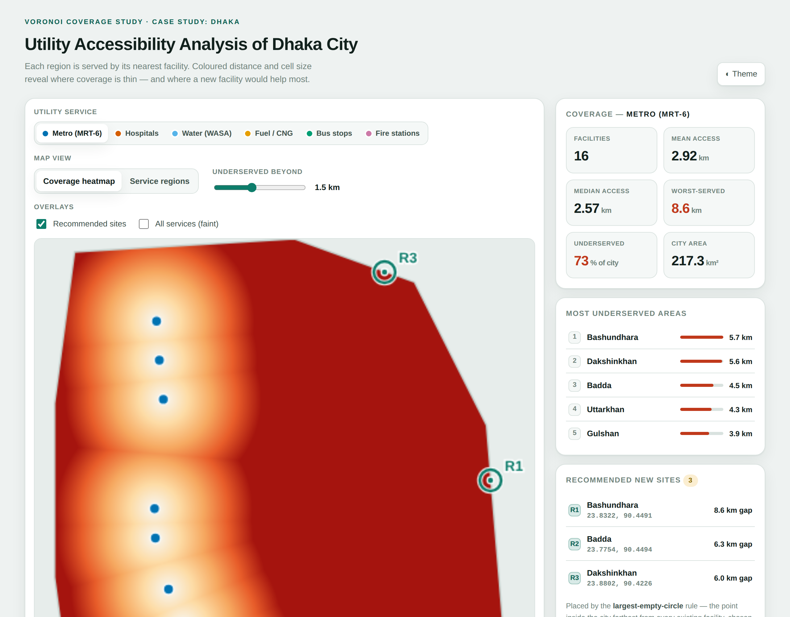
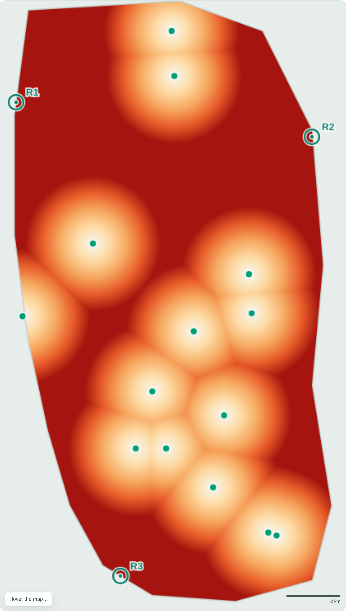
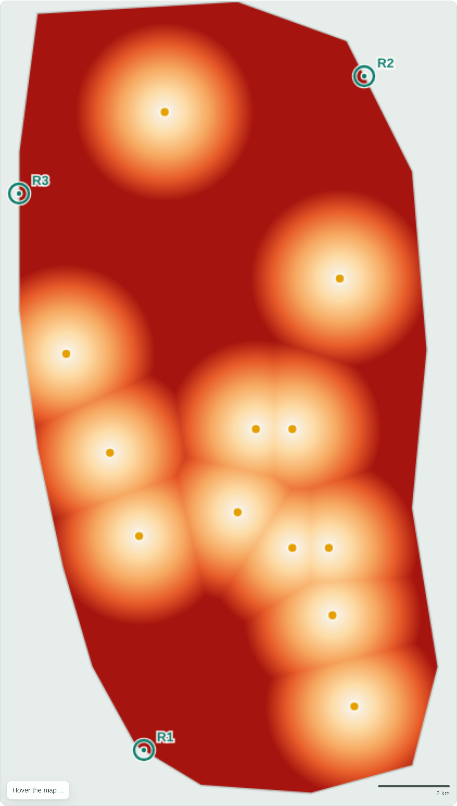
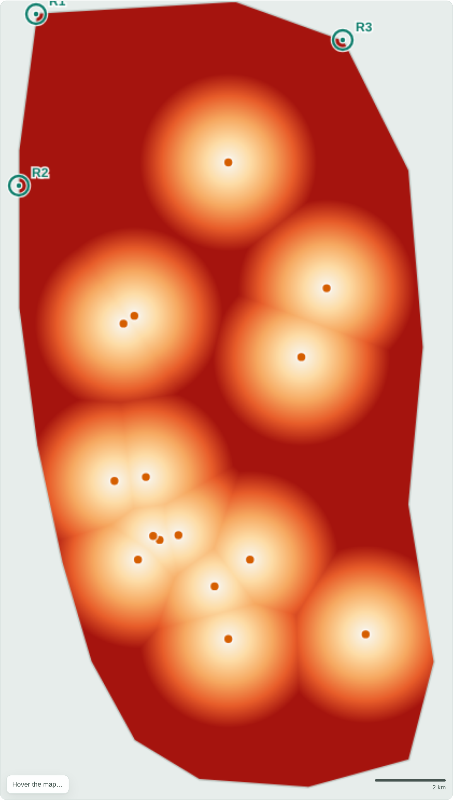
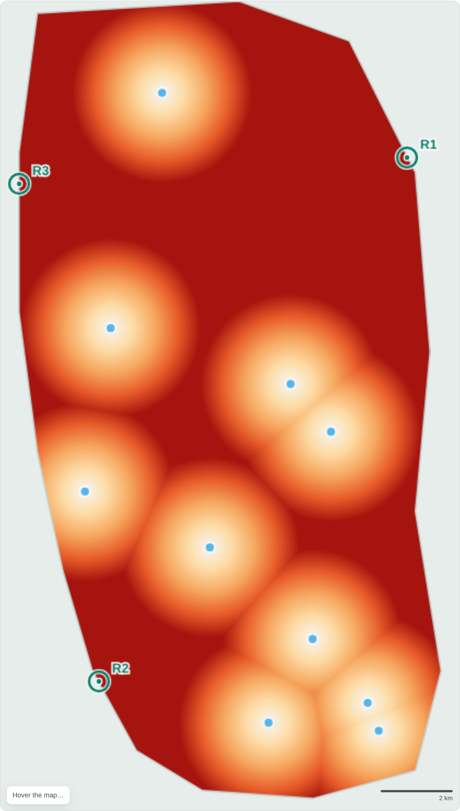
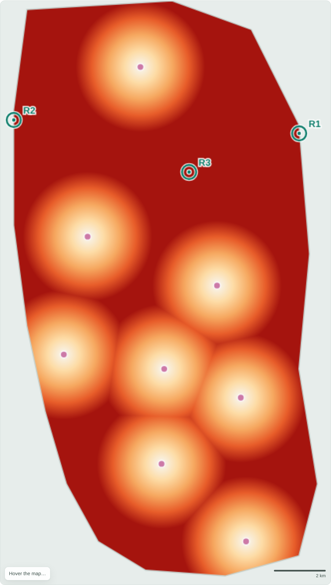
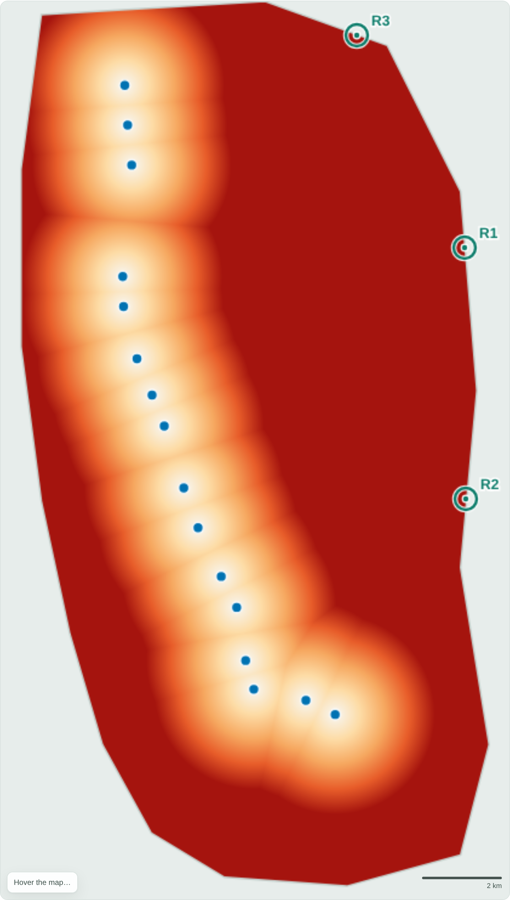
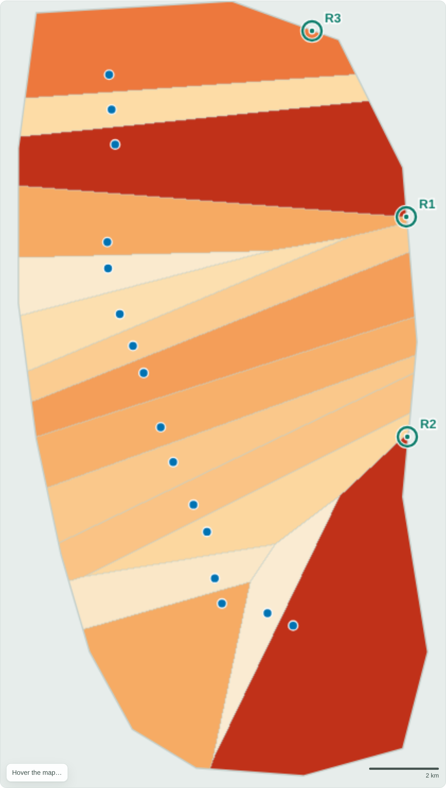

Partitioning the city by nearest facility to measure how evenly six essential services reach residents — and to locate, quantitatively, where a new facility would help most.
Dhaka is one of the world's densest cities, and its utility services have grown unevenly. Residents in some neighbourhoods reach a hospital, a metro station or a fire station within a few hundred metres; others travel several kilometres. Measuring that inequality objectively — not by anecdote — is a prerequisite for planning where to invest next.
Objective. Evaluate the spatial accessibility of utility services in Dhaka City using Voronoi diagrams, identify well-served and underserved areas, and recommend where new facilities should be added or existing services strengthened. Dhaka is used as the demonstrating case study.
The Voronoi diagram is the natural instrument for this question: it is exactly the geometry of “which facility is closest,” so its cells are the service catchments, and the distance to the cell's site is the travel burden a resident bears.
The analysis area is a polygon approximating Dhaka's built-up extent (Uttara and Turag in the north to Shyampur and Jatrabari in the south; the Buriganga/Balu belts as rough east–west limits), covering 217.3 km². We compiled approximate coordinates for 75 facilities across six services:
| Service | Facilities | Notes |
|---|---|---|
| Metro (MRT-6) | 16 | Line-6 stations, Uttara North → Motijheel |
| Hospitals | 15 | Major general & specialist hospitals |
| Water (WASA) | 10 | Treatment plants & zonal MODS points |
| Fuel / CNG | 12 | Filling & CNG stations |
| Bus stops | 14 | Terminals & major stops |
| Fire stations | 8 | Fire Service & Civil Defence stations |
Coordinates are provided as data/facilities.csv (and 24 reference neighbourhoods as
data/neighbourhoods.csv). They are hand-compiled approximations for a methodological study, not an
official register — see §7.
The pipeline has four stages, each reproducible in the accompanying tool.
For a set of facility sites S, the Voronoi cell of site s is every location closer to s than to any other site. We compute the partition as a fine distance raster: the city is sampled on a 420 × 740 grid (~30 m per pixel); each interior pixel is assigned to its nearest facility (the cell it belongs to) and stores its distance to that facility. Cell boundaries are the pixels where the nearest-facility label changes — the Voronoi edges.
Longitude/latitude are projected equirectangularly about 23.78°N, with
1° lat ≈ 110.6 km and 1° lon ≈ 101.9 km, so straight-line distances are in
kilometres. These are Euclidean (as-the-crow-flies) distances, an upper bound on accessibility relative to
the real (longer) road-network distance.
Over all interior pixels we report the mean, median and worst-case distance to the nearest facility, and the share of the city beyond a threshold (default 1.5 km — a reasonable walk/short-rickshaw catchment). A large Voronoi cell or a high distance both flag underservice.
New facilities are placed by the largest-empty-circle rule: the interior point farthest from every existing facility is the location a new facility would relieve most. We apply it greedily — place the site, add it to S, recompute, repeat — to propose the top priority sites for each service.

The table ranks services from most to least accessible by mean distance-to-nearest. A striking result: the metro has the most facilities (16) yet the worst accessibility — because its stations are collinear (a single line), the whole eastern half of the city falls far outside any station's reach. Point-distributed services (bus, fuel) cover area far more evenly with fewer facilities.
| Service | Fac. | Mean km | Median km | 90th pct | Worst km | > 1.5 km |
|---|---|---|---|---|---|---|
| Bus stops | 14 | 2.15 | 2.01 | 3.77 | 5.91 | 66.0% |
| Fuel / CNG | 12 | 2.18 | 2.05 | 3.75 | 5.99 | 67.6% |
| Hospitals | 15 | 2.23 | 2.09 | 3.91 | 6.82 | 69.7% |
| Water (WASA) | 10 | 2.33 | 2.15 | 4.07 | 7.05 | 71.7% |
| Fire stations | 8 | 2.34 | 2.19 | 3.99 | 6.65 | 74.5% |
| Metro (MRT-6) | 16 | 2.92 | 2.57 | 5.87 | 8.60 | 73.4% |






Figure 2. Coverage heatmaps, all six services. Light = close to a facility (well served); deep red = far (underserved). Teal rings mark recommended new sites. The eastern and peripheral red zones recur across every service.
Switching the tool to Service regions draws the Voronoi cells themselves, shaded by area. The metro's cells fan out enormously toward the east: a handful of stations “own” the entire Gulshan–Badda–Bashundhara side of the city, each resident there kilometres from a platform.

Reading the six maps together, the same places surface as underserved regardless of service:
For each service the tool proposes the three highest-impact new sites (largest current gap, in km). The “gap” is the distance from the proposed site to the nearest existing facility — i.e. how far the worst-off resident there travels today.
| Service | Site 1 (gap) | Site 2 (gap) | Site 3 (gap) |
|---|---|---|---|
| Metro | Bashundhara (8.6) | Badda (6.3) | Dakshinkhan (6.0) |
| Hospitals | Turag (6.8) | Turag S (4.9) | Dakshinkhan (4.7) |
| Water | Dakshinkhan (7.1) | Kamrangirchar (4.8) | Turag (4.7) |
| Fuel / CNG | Kamrangirchar (6.0) | Dakshinkhan (5.7) | Turag (4.6) |
| Bus | Turag (5.9) | Bashundhara (5.6) | Kamrangirchar (4.7) |
| Fire | Bashundhara (6.7) | Turag (5.3) | Cantonment (4.5) |
Because the same names recur, we consolidate them into cross-cutting priority zones — build once, relieve several services:
The largest and most repeated gap. Priority for a metro feeder/extension eastward, plus a fire station and additional bus provision. Fast-urbanising, high-density — the highest-return zone.
Recommended for water, fuel, hospital and metro-access improvements — the built edge has grown past its service network.
Two dense, river-hemmed pockets that are worst-served for several everyday services (hospitals, water, fire, fuel). Small, well-placed additions would sharply cut travel distance.
Open voronoi-dhaka.html in any browser (double-click — it needs no server or internet). Switch
the utility service, toggle between the coverage heatmap and the Voronoi regions, drag the underserved-distance
threshold, and hover any point to read its coordinates, nearest facility and distance. Every statistic and
figure in this report is generated live by that page from data/facilities.csv.
voronoi-dhaka.html (tool), report.html (this document),
figures/ (maps), data/facilities.csv, data/neighbourhoods.csv.